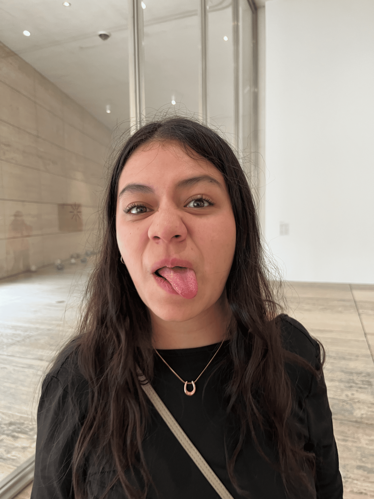
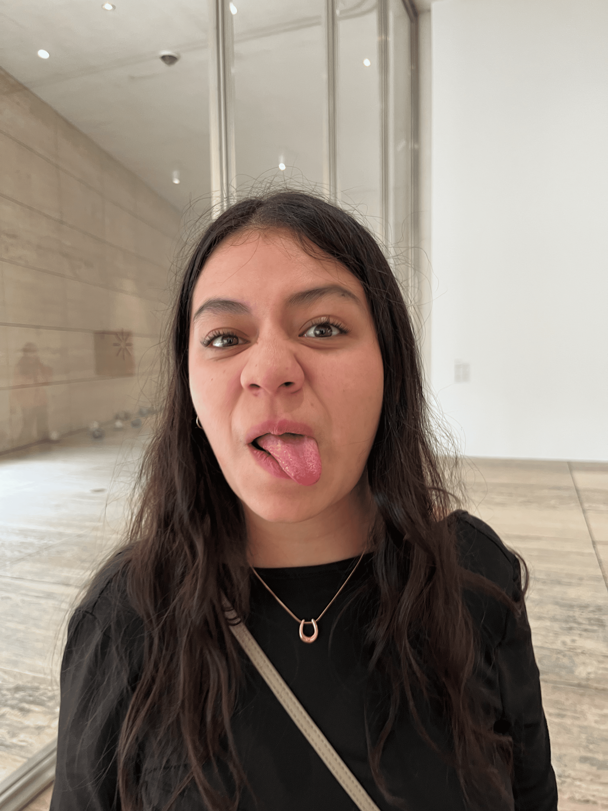

Mi Vale preciosa
Este pequeño detalle es para ti, te quiero con todo mi corazón, gracias por todo.
쮺칩mo empezó todo esto?
Me encanta la idea de poder estar con alguien donde nos hemos conocido desde niños, me encanta poder recordar todos esos momentos de las primeras veces donde nos conocimos.
Yo sé que ya te gustaba desde ese entonces. 😅


Nuestros momentos
Hemos vivido tantas cosas y tantos momentos que se me hace imposible decir cual es el mejor.
Estoy seguro de que quiero pasar muchos años llenos de recuerdos y aventuras contigo.


 

Gracias pequeña
Gracias por ser tú misma siempre que estamos juntos, y gracias por mostrarme todos los lados de ti.
No terminaría de agradecer todo lo que me has apoyado, escuchado.
Te quiero con todo mi corazón 🥹.

Te quiero
Y quien lo iba a imaginar, te has vuelto una de las personas mas importantes en mi vida.
Quiero todo contigo, quiero estar en las buenas y en las malas junto a ti 🫶🏼.